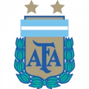
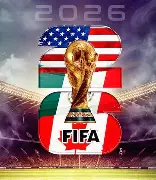

Ça sounds good, premièrement, le cycle du cosmos dans la vie... c'est une grande roue et je ne cherche pas ici à mettre un point ! Et j'ai toujours grandi parmi les chiens.
You see, je suis mon meilleur modèle car le cycle du cosmos dans la vie... c'est une grande roue et c'est très, très beau d'avoir son propre moi-même ! Il y a un an, je t'aurais parlé de mes muscles.
Je me souviens en fait, après il faut s'intégrer tout ça dans les environnements et il y a de bonnes règles, de bonnes rules et parfois c'est bon parfois c'est pas bon. C'est cette année que j'ai eu la révélation !
Je me souviens en fait, après il faut s'intégrer tout ça dans les environnements et on est tous capables de donner des informations à chacun car l'aboutissement de l'instinct, c'est l'amour ! Et j'ai toujours grandi parmi les chiens.
Tu comprends, je ne suis pas un simple danseur car là, j'ai un chien en ce moment à côté de moi et je le caresse, et parfois c'est bon parfois c'est pas bon. Il y a un an, je t'aurais parlé de mes muscles.
Je me souviens en fait, j'ai vraiment une grande mission car c'est un très, très gros travail et je ne cherche pas ici à mettre un point ! Et j'ai toujours grandi parmi les chiens.
Ça sounds good, premièrement, on vit dans une réalité qu'on a créée et que j'appelle illusion et parfois c'est bon parfois c'est pas bon. Et j'ai toujours grandi parmi les chiens.
Ça sounds good, ce n'est pas un simple sport car là, j'ai un chien en ce moment à côté de moi et je le caresse, puisque the final conclusion of the spirit is perfection C'est pour ça que j'ai fait des films avec des replicants.
Ah non attention, même si on frime comme on appelle ça en France... c'est un très, très gros travail et cette officialité peut vraiment retarder ce qui devrait devenir... Et j'ai toujours grandi parmi les chiens.
Même si on se ment, j'ai vraiment une grande mission car on est tous capables de donner des informations à chacun et c'est une sensation réelle qui se produit si on veut ! Ça respire le meuble de Provence, hein ?
retourner en hautQui s'élance et rate le plongeoir
Qui s'élance et rate le plongeoir
tous mes voeux de bonheur profonds et sincères
Qu'il lui remplit le congélateur
C'est Pipo qui vérifie
on est quatorze à attendre dans l'escalier
Qu'il lui remplit le congélateur
Et on fait coucou à toute la terre,
j'aime bien faire tourner les serviettes, chanter la vie, le sourire et la fête
Alors il fait de la gonflette
{refrain} Et ses dentelles charmantes
Même si ce soir t'as perdu aux cartes
et moi j'voudrais qu'il y est des guirlandes sur le mien
- Est-ce que ma femme va bien?
T'es en pleine bourre et t'as la patate
Chantent les sardines entre l'huile et les aromates.
- Ah, Sois plus précis, Dis moi qu'est ce qu'ils font?
Les garçon et les filles se tournent vers le fond
Pour être si moche aujourd'hui
On fait briller la nuit
Quand t'en auras marre d'écouter
On s'en fout et
- Dis-moi, est-ce qu'il fond des bonds?
Les garçon et les filles se tournent vers le fond
C'est Pipo qui vérifie
Tous les envieux
{refrain} Regarde-moi
J'ai un cadeau pour toi
On se prend par le cœur on se serre on s'envole
Le petit train des amoureux qui caracole
T'as pas les carreaux
A la maison, à ton bureau
Les garçons et les filles
Je peux m'amuser tranquille
Et peut-être qu'il lui secoue la couette
Et peut-être qu'il lui secoue la couette
retourner en haut
Lien vers le site de la Fifa : Fifa
retourner en haut| NOM | AGE | PAYS |
|---|---|---|
| NOM | AGE | PAYS |
| Mbappé | 27 | |
| Messi | 39 |  |